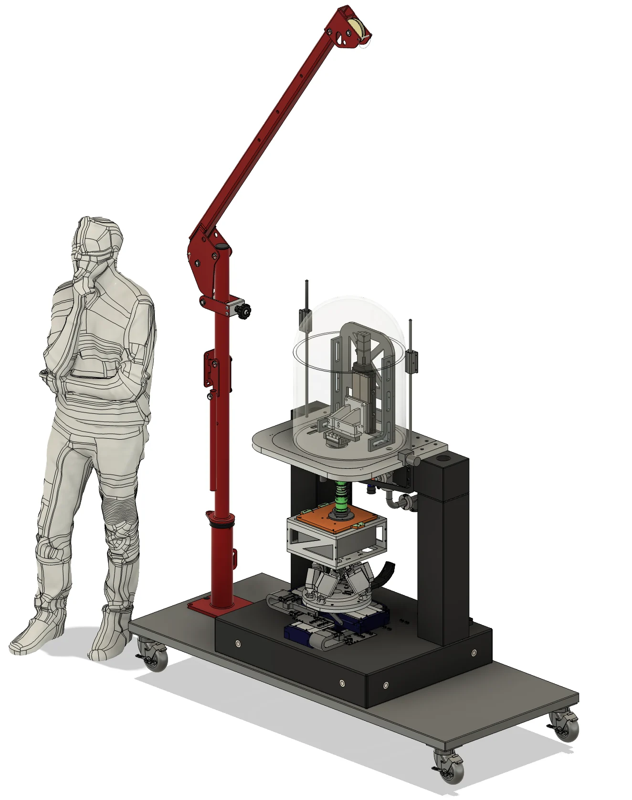
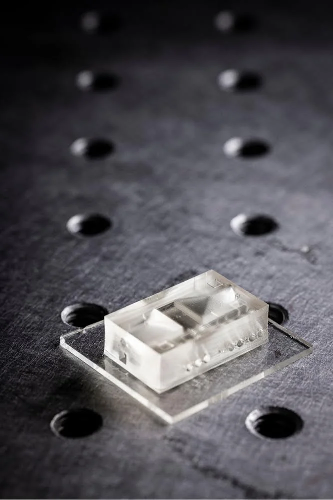

BYU Microfluidics Laboratory
Vacuum-capable 3D printing
In Dr. Greg Nordin’s Microfluidics Laboratory at BYU, I served as project owner for the design and manufacture of a vacuum-capable 3D printer and worked on microfluidic device fabrication.

Printer development
The printer was designed to operate under vacuum, addressing oxygen-bubble interference during fine-feature fabrication. It also added monitoring and adjustment capabilities. My work spanned the printer’s design and manufacture.


Microfluidic devices
I worked on initial design and printing iterations for a no-flow concentration-gradient device intended for cell-testing applications. I also helped create an automated flushing system to improve microfluidic-chip manufacturing.


Skills: 3D printing, Microfluidics, Design & fabrication